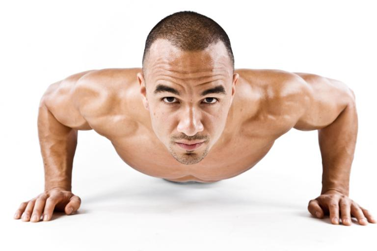

Beneficios de llevar una vida Saludable
Los beneficios de una vida saludable son múltiples. Tener una rutina de hábitos saludables nos va
a permitir mantenernos activos y realizar un montón de actividades. Sin una salud fuerte y vigorosa
no podríamos realizarlas con éxito. Nuestra satisfacción interna irá en aumento y se mantendrá en lo más alto.
Entendemos por vida saludable todos aquellos actos que realizamos diariamente para contribuir a tener una buena
salud. Una vida sana no se consigue de un día para otro, sino que tenemos que ser constantes. Hay que tener
una buena base planificada de hábitos saludables que queremos seguir. De ese modo, nuestro cuerpo y nuestra
mente se irán aclimatando a unos ritmos de vida diferentes. Como norma habitual, suele ser más común
encontrarse casos en los que las personas tienen rutinas de vida que son poco o nada saludables.
Quizá es así, porque es más fácil y cómodo que hacerlo correctamente (o al menos esa es la creencia popular).
Debido a la gran desinformación que poseen muchas personas, tienen menos posibilidades para poner solución al
problema de llevar una vida poco saludable. Por suerte, aquí vas a encontrar todo lo que necesitas para ponerte
en marcha cuanto antes. La información que vas a encontrar te va a ser muy útil si desconoces por dónde empezar
y cómo continuar. Puedes navegar por las diferentes secciones de la web para encontrar todo lo que necesites saber.
Beneficios de biólogicos del Deporte
Hábito saludable se define como cualquier comportamiento, que beneficie la salud mental, física y/o emocional de un individuo,
puesto que, mejoran su bienestar general. Entre los hábitos necesarios para llevar una vida saludable destacan: comer bien,
hacer ejercicio y evitar sustancias nocivas, pero muchos se preguntan: ¿cuáles son los beneficios reales de ello

Realizar de forma regular y sistemática una actividad física ha demostrado ser una práctica muy beneficiosa en la prevención,
desarrollo y rehabilitación de la salud, a la vez que ayuda al carácter, la disciplina y a la toma de decisiones en la vida cotidiana.
El ejercicio físico, ya sea de corta o larga duración, contribuye a establecer un bienestar mental, mejorando la autonomía de la persona,
la memoria, rapidez de ideas, etcétera, y promoviendo sensaciones como el optimismo o la euforia, al tiempo que se mejora la autoestima de
las personas, lo que produce beneficios en diferentes enfermedades como la osteoporosis, la hipertensión o las crisis diabéticas.
Beneficios Psicologicós del Deporte
Los beneficios que aporta el deporte son generalmente conocidos, pero quizás hay algunos que has pasado por alto o que no sabías realmente
que haciendo ejercicio los obtendrías. En este artículo te voy a hablar concretamente sobres los beneficios psicológicos del deporte.
Desde el origen del ser humano hasta nuestros días se han producido inmunerables cambios en la forma de vivir y estilos de vida. Han
surgido diversos factores que afectan a nuestra salud y que producen un impacto directo en nuestras vidas. Así pues, el estilo de vida y los hábitos que tengamos pueden no ser apropiados para nuestro desarrollo evolutivo. Nuestro cuerpo no está hecho para vivir así y ello se refleja en los problemas de sedentarismo, alcohol, obesidad, estrés laboral y muchas otras condiciones perjudiciales para la salud.
En concreto, la actividad física contribuye a un incremento de la calidad de vida: mejora la salud física y mental y aumenta la esperanza
de vida. También alivia tensión, favorece la concentración y produce sensaciones de optimismo y bienestar.